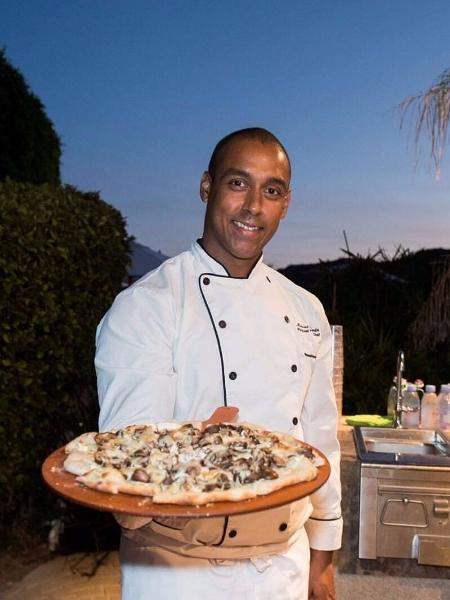

Nossa Origem
Tudo começou em uma pequena cozinha, com a paixão por receitas que atravessaram gerações. Nossos fundadores trouxeram a tradição italiana e a adaptaram com o toque especial da nossa casa, resultando em pizzas que celebram a leveza e a crocância da massa, combinadas com o sabor autêntico de ingredientes frescos.
Cada pizza é um tributo à nossa herança, feita com amor e atenção aos detalhes, para que cada mordida te transporte para as ruas de Nápoles.
Qualidade
Usamos apenas ingredientes selecionados, do molho de tomate fresco à mozzarella derretida na medida certa.
Tradição
Respeitamos as receitas tradicionais, mas com a ousadia de inovar e surpreender nossos clientes.
Paixão
Mais do que um negócio, a La Bella Pizza é uma paixão pela arte de fazer a melhor pizza.
Nossa Equipe

Chef Giovanni
Nosso mestre pizzaiolo, com mais de 20 anos de experiência na arte da pizza artesanal.
Gerente
Responsável por garantir que cada visita seja uma experiência inesquecível de sabor e atendimento.